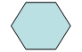
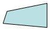
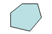
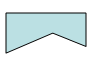

Polygon
Definition: A number of
coplanar
line segments, each connected end to end to form a closed shape.
Try this Drag the orange dots on each
vertex
to reshape the polygon. It is initially an irregular polygon; change it by clicking on "make regular", and change the number of sides.
Polygons are one of the most all-encompassing shapes in geometry. From the simple triangle up through squares, rectangles,
trapezoids, to dodecagons and beyond.
In the figure above click on "make regular" and then gradually change the number of sides to see familiar shapes.
Types of Polygon
| Regular

|
A polygon with all sides and
interior angles
the same. Regular polygons are always convex.
See Regular Polygons |
| Irregular

|
Each side may a different length, each angle may be a different measure. The opposite of a regular polygon.
See Irregular Polygons
|
| Convex

|
All
interior angles
less than 180°,and all
vertices
'point outwards' away from the interior. The opposite of concave.
Regular polygons are always convex.
See Convex Polygons
|
| Concave

|
One or more interior angles greater than 180°. Some vertices push 'inwards'
towards the interior of the polygon. The opposite of convex.
See Concave Polygons
|
Self-intersecting
or Crossed

|
A polygon where one or more sides crosses back over another side, creating multiple smaller polygons. Most of the properties and theorems concerning polygons do not apply to this shape.
It is best considered as several separate polygons.
A polygon that in not self-intersecting in this way is called a simple polygon.
|
Properties of all Polygons (regular and irregular)
Properties of Regular Polygons
Named Polygons
Many polygons have names based on the number of sides. A 5-sided polygon is called a pentagon for example.
There are some that wish to name every possible polygon, but there seems little point in doing so.
For example a 42-sided polygon is called a "tetracontakaidigon".
Beyond about 10 sides, most people call them an "n-gon". For example a 15-gon has 15 sides. This seems easier to remember and understand.
However, there are some names that do occur in everyday experience:
But if you would prefer to call a heptagon a 7-gon for example, that's fine. Everyone will know what you mean.
Other polygon topics
General
Types of polygon
Area of various polygon types
Perimeter of various polygon types
Angles associated with polygons
Named polygons
(C) 2011 Copyright Math Open Reference.
All rights reserved